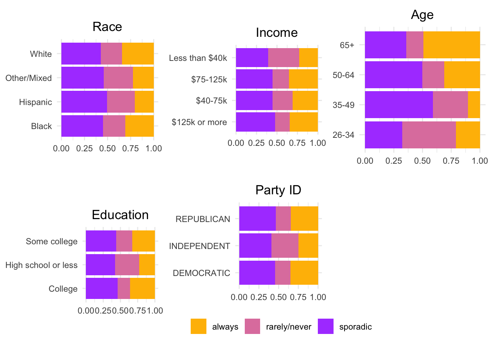

# Suppress warnings while loading libraries
suppressPackageStartupMessages({
library(flextable)
library(ggplot2)
library(gridExtra)
library(readr)
library(dplyr)
})
# Read the CSV file without displaying column types
suppressMessages({
nonvoters <- read_csv("nonvoters_data.csv", show_col_types = FALSE)
})Presentation Exercise
About Data
The data was about the poll that was conducted from Sept. 15 to Sept. 25 among a sample of U.S. citizens that oversampled young, Black and Hispanic respondents, with 8,327 respondents, and was weighted according to general population benchmarks for U.S. citizens from the U.S.
This the original Image to be reproduced

Prompted chatgpt for the code: Prompt: Please generate R code to visualize demographic data, including variables such as race, income, age, and education, segmented by voter category. Ensure that each variable is plotted as a bar graph with custom colors for the voter categories and arrange the plots in a grid with two columns. After I adjusted the code to try fit what I wanted.
# Create a new categorical variable 'Age_Category' based on age ranges using mutate and ifelse
nonvoters <- nonvoters %>%
mutate(Age = ifelse(ppage >= 26 & ppage <= 34, "26-34",
ifelse(ppage >= 35 & ppage <= 49, "35-49",
ifelse(ppage >= 50 & ppage <= 64, "50-64", "65+"))))# Define custom colors for voter categories
custom_colors <- c("#ffbc00", "#e082ad", "#ae4dff")
# Plot race by voter category
plot_race <- ggplot(nonvoters, aes(x = race, fill = voter_category)) +
geom_bar(position = "fill") +
labs(x = "Race", y = "Percentage", fill = "Voter Category") +
scale_fill_manual(values = custom_colors) +
theme_minimal() +
theme(legend.position = "", axis.title.y = element_blank(), axis.title.x = element_blank()) +
coord_flip() +
ggtitle("Race") +
theme(plot.title = element_text(hjust = 0.5))
# Plot income by voter category
plot_income <- ggplot(nonvoters, aes(x = income_cat, fill = voter_category)) +
geom_bar(position = "fill") +
labs(x = "Income", y = "Percentage", fill = "Voter Category") +
scale_fill_manual(values = custom_colors) +
theme_minimal() +
theme(legend.position = "", axis.title.y = element_blank(), axis.title.x = element_blank()) +
coord_flip() +
ggtitle("Income") +
theme(plot.title = element_text(hjust = 0.5))
# Plot Age by voter category
plot_age <- ggplot(nonvoters, aes(x = Age, fill = voter_category)) +
geom_bar(position = "fill") +
labs(x = "Age", y = "Percentage", fill = "Voter Category") +
scale_fill_manual(values = custom_colors) +
theme_minimal() +
theme(legend.position = "", axis.title.y = element_blank(), axis.title.x = element_blank()) +
coord_flip() +
ggtitle("Age") +
theme(plot.title = element_text(hjust = 0.5))
# Plot education by voter category
plot_education <- ggplot(nonvoters, aes(x = educ, fill = voter_category)) +
geom_bar(position = "fill") +
labs(x = "Education", y = "Percentage", fill = "Voter Category") +
scale_fill_manual(values = custom_colors) +
theme_minimal() +
theme(legend.position = "", axis.title.y = element_blank(), axis.title.x = element_blank()) +
coord_flip() +
ggtitle("Education") +
theme(plot.title = element_text(hjust = 0.5))
# Arrange plots in a grid
grid.arrange(plot_race, plot_income, plot_age, plot_education, ncol = 2)
Nonvoters were more likely to have lower incomes; to be young; to have lower levels of education.
# Read WNBA player stats data from CSV file
suppressWarnings(wnba_player_stats <- read_csv("wnba-player-stats.csv", show_col_types = FALSE))About Data
The data used contains season-level advanced stats for WNBA players by team for the 1997-2019 seasons, from Basketball-Reference.com. It also contains Composite Rating, which blends PER and Win Shares per 40 into a single metric that mimics RAPTOR player ratings. I prompted chatgpt that produced a code, I didn’t use it but it guided to write mine.
The original table to be reproduced. 
# Filter the data to include only players who played at least 375 minutes
filtered_data <- wnba_player_stats %>%
filter(MP >= 375)
# Renaming variables to fit the table
filtered_data <- filtered_data %>%
rename(
PLAYER = Player,
SEASON = year_ID,
AGE = Age,
TEAM = Tm,
WS40 = WS40,
COMPOSITE_RATING = Composite_Rating
)
# Arrange the data to find the best single-season composite ratings
top_players <- filtered_data %>%
arrange(desc(COMPOSITE_RATING)) %>%
select(PLAYER, SEASON, AGE, TEAM, PER, WS40, COMPOSITE_RATING) %>%
head(15)
# Create flextable for the top players
ft <- flextable(top_players)
# Print the flextable
ftPLAYER | SEASON | AGE | TEAM | PER | WS40 | COMPOSITE_RATING |
|---|---|---|---|---|---|---|
Lauren Jackson | 2,006 | 25 | SEA | 34.7 | 0.416 | 11.5 |
Cynthia Cooper | 1,998 | 35 | HOU | 31.1 | 0.382 | 10.7 |
Cynthia Cooper | 1,997 | 34 | HOU | 32.2 | 0.385 | 10.6 |
Sheryl Swoopes | 2,000 | 29 | HOU | 32.0 | 0.361 | 10.5 |
Lauren Jackson | 2,007 | 26 | SEA | 35.0 | 0.373 | 10.4 |
Nneka Ogwumike | 2,016 | 25 | LAS | 31.3 | 0.370 | 10.3 |
Sylvia Fowles | 2,017 | 31 | MIN | 30.8 | 0.350 | 10.0 |
Elena Delle Donne | 2,019 | 29 | WAS | 31.8 | 0.343 | 9.9 |
Elena Delle Donne | 2,015 | 25 | CHI | 32.8 | 0.346 | 9.4 |
Lauren Jackson | 2,003 | 22 | SEA | 32.1 | 0.333 | 9.2 |
Cynthia Cooper | 1,999 | 36 | HOU | 29.5 | 0.335 | 9.2 |
Yolanda Griffith | 1,999 | 29 | SAC | 31.9 | 0.330 | 9.1 |
Lauren Jackson | 2,010 | 29 | SEA | 27.9 | 0.333 | 8.8 |
Tamika Catchings | 2,007 | 27 | IND | 29.4 | 0.325 | 8.6 |
Nneka Ogwumike | 2,017 | 26 | LAS | 28.1 | 0.321 | 8.5 |
The table shows Cooper-Dyke’s early WNBA seasons are among the best ever Best single-season composite ratings — based on a mix of player efficiency rating (PER) and win shares per 40 minutes — for WNBA players who played at least 375 minutes that season, 1997-2019